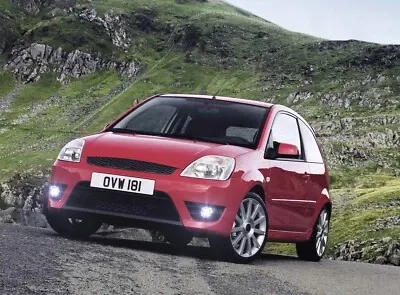

Ford fiesta 2005 pripada petoj generaciji modela (na balkanu poznata pod oznakom Fiesta Mk6)
Koristi 1.25L Duratec 16V,2.0L Duratec (ST150),1.4L Duratec 16V...itd i imaju 75-150ks
Maksimalna brzina je 151 km/h pa sve do preko 200 km/h
→ ←